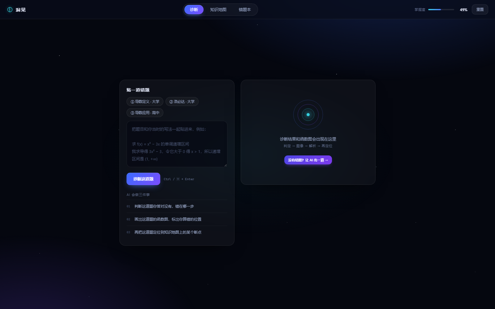
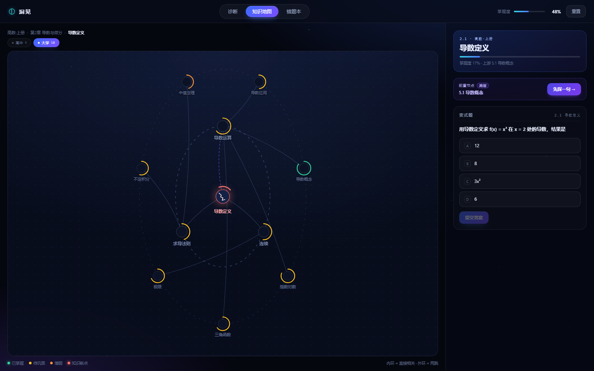
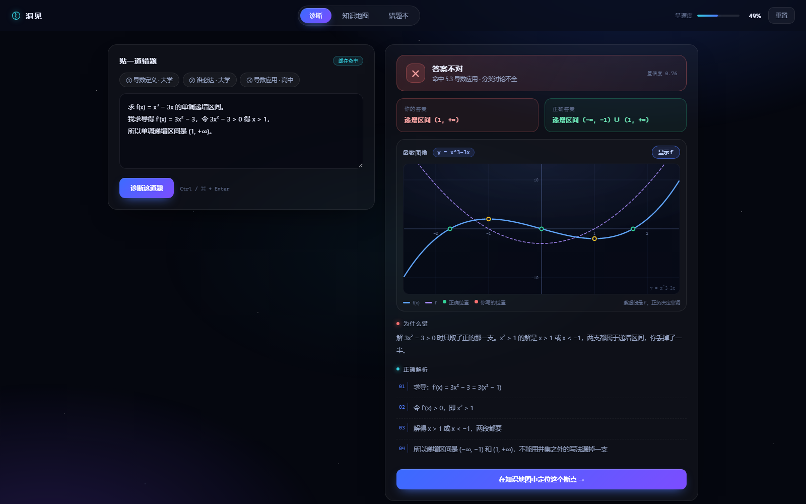
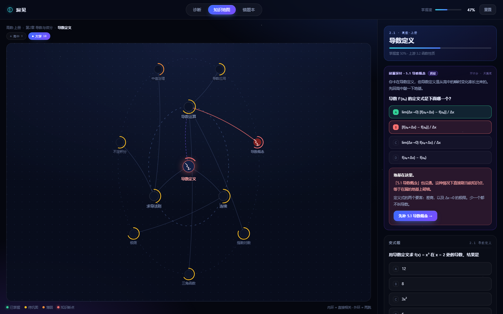
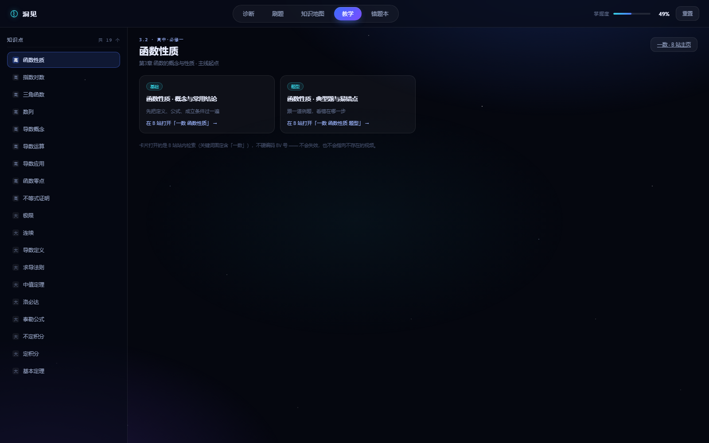

错题本记录的是「错了哪道题」，而学生真正需要知道的是「我哪一块不会」。这两件事之间隔着一道鸿沟：学生把题抄一遍、答案改一遍，下次照样错，因为他不知道这道题背后站着哪个知识点，更不知道那个知识点下面还漏着哪几块。
市面上的搜题产品解决的是「这道题答案是什么」，是点状的；本作品解决的是「这个洞在知识地图的哪一格，它下面还漏着哪几格」，是结构的。
| 维度 | 常见做法 | 本作品 |
|---|---|---|
| 判定粒度 | 判断答案对错，给出正确解法 | 判断错在哪一步，并指出这一步在知识体系中的位置 |
| 知识组织 | 按年级/章节平铺 | 跨学段依赖图，高中与大学节点由「跨层边」连接 |
| 补救路径 | 推同类题 | 前置探针：先查地基，答错则地基节点同步裂开 |
项目起点是一句很具体的话：「我表弟大一下学期，高数挂了。洛必达、泰勒，他全背了，题还是不会做。」
继续追问会发现，他挂在「洛必达」上的那道题，真正卡住的地方不在大学教材第 3 章，而在两年前的高中：导数的定义。他记住了 f′(x) 这个符号，却没建立起「差商取极限」这个动作。
这就是跨学段断层：知识是分层依赖的，但学习记录是按学期切片的。学生在大学遇到困难时，最需要的不是大学的题，而是把时钟拨回高中。
| 工具类型 | 它做了什么 | 它没做什么 |
|---|---|---|
| 搜题 App | OCR 题目 → 返回答案与解析 | 不知道这道题在知识体系中的坐标，也不关心学生是否真的会了前置 |
| 错题本 App | 归档、分类、提醒复习 | 分类靠人工打标签，且只在本学期/本章内组织 |
| 在线题库 | 按知识点推题 | 知识点是平铺的树，没有跨学段的依赖关系，也不会主动回溯 |
| AI 家教 | 对话式讲题 | 上下文只覆盖本轮对话，无法形成长期的知识状态 |
prereq（前置），边要能跨学段，否则回溯无从谈起。目标用户是「跨学段复习」中的学生：大一新生补高中缺口、高三学生用大学视角回看导数、以及任何需要知道「我到底哪一块不会」的自学者。产品形态刻意做成网页而非 App —— 学生打开即用，无需安装，也便于在教室投影。
┌─────────────────────────────────────────────────────────┐ │ 视图层（5 个 view，单页路由，无框架） │ │ 诊断 · 刷题 · 知识地图 · 教学 · 错题本 │ ├─────────────────────────────────────────────────────────┤ │ 交互层（app.js） │ │ 视图路由 / 状态机 / 焦点图布局 / 动画 / localStorage 持久化 │ ├─────────────────────────────────────────────────────────┤ │ 能力层 │ │ plot.js 函数图像引擎（表达式解析 + 绘制 + 交互） │ │ mathfmt.js 轻量数学排版（lim 下标 / 积分号 / 上标） │ │ data.js 知识库（UMD，浏览器与 Node 共用同一份） │ ├─────────────────────────────────────────────────────────┤ │ 服务层（server.js，零依赖，可选） │ │ 静态托管 / POST /api/diagnose / 两段式 prompt / 校验 / 缓存 │ └─────────────────────────────────────────────────────────┘
用户输入（题干 + 学生写法）
│
├─① 本地召回 data.recallCandidates(text, 10)
│ 关键词打分 → 19 个节点收缩到 10 个候选
│
├─② POST /api/diagnose { text, candidates }
│ ├─ 命中缓存？ → 直接返回（毫秒级）
│ ├─ 有 API Key？ → 只把 10 个候选喂给模型
│ │ ├─ schema 校验通过 → 落盘 cache.json → 返回
│ │ └─ 校验失败 → 带错误回给模型重试 1 次 → 仍失败 → 兜底
│ └─ 无 Key / 超时 / 网络错 → 兜底
│
├─③ 本地引擎 data.diagnoseLocal(text)
│ 同一套打分逻辑的 argmax + 规则化的错因映射
│
└─④ 前端二次校验 validDiag()
只取 7 个字段 → 用知识库「富化」→ 渲染
这个选择不是炫技，是约束推导的：
npm install 的方案，都在演示现场多了一个失败点。代价是放弃组件复用与类型检查，用约定（统一的选择器命名、统一的渲染函数签名）来弥补。
| 形态 | 启动方式 | 能力边界 |
|---|---|---|
| 纯静态 | 双击 index.html | 全部功能可用，诊断走本地引擎（徽标显示「离线演示」） |
| 本地服务 | node server.js | 同上 + 可接任意 OpenAI 兼容网关 + 诊断缓存 |

把 19 个节点全部写进系统提示词，让模型自己选，看起来最简单。实测的问题是：节点越多，模型的选择越接近随机 —— 尤其是「导数概念 / 导数运算 / 导数应用 / 导数定义」这种名字高度相似的节点，模型很容易在四者之间漂移。
解法是把「选」拆成两步：先由本地把候选收缩到 10 个，再让模型在这 10 个里做精判。
每个节点维护一组关键词 kw[]，打分函数带两个特殊规则：
function scoreNode(text, n) {
var t = normalize(text), s = 0;
n.kw.forEach(function (k) {
var weak = k.charAt(0) === '#'; // #sin 这类通用符号降权
var kk = normalize(weak ? k.slice(1) : k);
if (kk && t.indexOf(kk) >= 0) {
s += (1 + kk.length / 8) * (weak ? 0.4 : 1);
}
});
if (t.indexOf(normalize(n.label)) >= 0) { s += 2; } // 节点名出现，强信号
return s;
}
两条规则的由来都是踩过坑的：
#：题目「求 lim(sinx/x) 用洛必达」里，sin 会命中三角函数、lim 会命中极限，两者都可能盖过真正命中的「洛必达」。把这类通用符号降到 0.4 倍权重后，结果稳定命中。提示词按候选集动态生成，只包含这 10 个节点的信息（id、名称、章节号、学段、前置），并明确「你只能在这 10 个里选一个」。
system: 第一步已经做完了：系统用关键词把这题召回成下面这 10 个候选节点。
你只能在这 10 个里选一个，禁止自创、禁止拼错、禁止选候选之外的：
- der-def｜导数定义｜2.1｜大学｜前置：导数概念
- der-con｜导数概念｜5.1｜高中｜前置：函数性质
...
错因类型按命中节点的学段选，各学段枚举不同：
高中：符号错误 / 概念混淆 / 分类讨论不全 / 换元不当 / 运算跳步
大学：条件遗漏 / 定理误用 / 概念混淆 / 推演跳步 / 极限判错
只输出 JSON，字段固定：{...}
模型只允许输出 7 个字段，其中 4 个必填、3 个可选。地图坐标、前置依赖、探针题、变式题、解析文本 —— 模型一个都碰不到。
| 字段 | 必填 | 约束 | 用途 |
|---|---|---|---|
nodeId | 是 | 必须落在候选集内 | 决定地图上哪个节点裂开 |
errorType | 是 | 必须符合该学段的枚举 | 决定错因标签的颜色与文案 |
confidence | 是 | 0–1 的有限数 | 判定卡右上角显示 |
diagnosis | 是 | 4–160 字 | 「为什么错」一段话 |
answer | 否 | ≤120 字 | 参考答案 |
steps | 否 | 2–6 条，每条 ≤120 字 | 分步解析 |
pitfall | 否 | ≤120 字 | 常见错误 |
校验失败时不直接放弃，而是把错误原因回给模型，要求它只修格式、重试一次。这样既保住了成功率，又不会无限重试拖长延迟。
const first = await callModel(messages);
if (validate(first, cands).length === 0) return { data: first, repaired: false };
messages.push({ role: 'assistant', content: JSON.stringify(first) });
messages.push({ role: 'user',
content: '你的输出不符合 schema：' + errs.join('；') +
'。只输出合法 JSON，nodeId 必须来自候选集，errorType 必须符合该学段枚举。' });
const second = await callModel(messages); // 仍失败则抛错 → 走兜底
选到候选集之外的节点是硬失败，这点刻意做得比通用 schema 更严：宁可走本地兜底，也不接受一个地图上不存在的坐标。
做演示系统时，最该先假设的不是「一切正常」，而是「一定会出事」。三种最常见的死法：
三级兜底就是针对这三种死法设计的，目标是：无论发生什么，界面都能给出一个结构完整的结果。
| 级别 | 触发条件 | 行为 | 界面徽标 |
|---|---|---|---|
| 1 | 命中 cache.json | 直接返回，不调用模型 | 缓存命中 |
| 2 | 有 Key 且校验通过 | 正常模型调用 | 模型 · gpt-4o-mini |
| 3 | 无 Key / 超时 / 校验失败 / 断网 | 本地规则引擎出结果 | 本地兜底 |
此外还有第四种状态：以 file:// 打开时前端直接跳过网络请求，徽标显示「离线演示」。
function keyOf(text) {
return crypto.createHash('sha256')
.update(String(text).replace(/\s+/g, '')) // 忽略空白差异
.digest('hex').slice(0, 16);
}
归一化后取哈希前 16 位作为键。演示前把要讲的三道题各跑一遍，第二次就永远命中缓存 —— 现场零延迟，也不消耗额度。
关键设计：diagnoseLocal() 返回的结构与模型完全一致，因此下游渲染逻辑只有一条路径。它做两件事：
recallCandidates 的分数，取 argmax。因此本地模式不是「降级到不能看」，而是「内容略浅、结构完整」。
即使服务端说「成功」，前端仍会再校验一次：nodeId 是否在知识库中、errorType 是否在枚举内、confidence 是否为 0–1 的数。任何一项不过，直接用本地结果。
async function getDiagnosis(text) {
if (!USE_API) return { data: DATA.diagnoseLocal(text), source: 'local' };
try {
var j = await askServer(text);
if (validDiag(j.data)) return { data: j.data, source: j.source };
return { data: DATA.diagnoseLocal(text), source: 'fallback' };
} catch (e) {
return { data: DATA.diagnoseLocal(text), source: 'fallback' };
}
}
这段代码里没有一条会 throw 出去的路径 —— 这是刻意的：诊断函数永远返回结果。
19 个节点如果一次性画在 520×680 的画布里，节点标签会互相压盖，边会交叉成蜘蛛网。更根本的问题是：全图没有焦点。学生关心的是「我这道题周围有什么」，不是「整个学科长什么样」。
所以地图永远只画当前节点 ±2 跳，上限 15 个节点。
dist=0；邻居 dist=1；邻居的邻居 dist=2；超过 2 跳不取。dist=1 的节点按顺序均匀分布在一个椭圆上，角度 -90° + 360°/n · i（从正上方开始顺时针）。dist=2 的节点先按「其父节点在内环的顺序」排序，再均匀铺满外圈 —— 这样相同父节点的子节点会挨在一起，交叉最少。viewBox，让图永远填满容器。
var CX = 280, CY = 330; // 画布中心
var R1X = 118, R1Y = 176; // 内环椭圆半径
var R2X = 208, R2Y = 318; // 外环椭圆半径
// 动态 viewBox：包围盒 + 上下不对称内边距（上方留给面包屑）
map.setAttribute('viewBox',
(minX - 92) + ' ' + (minY - 76) + ' ' +
(maxX - minX + 184) + ' ' + (maxY - minY + 156));
| 手段 | 做法 | 效果 |
|---|---|---|
| 同心导引环 | 用虚线椭圆描出内环与外环 | 一眼看出「直接相关」与「两跳之外」 |
| 主次分层 | 焦点半径 25、内环 20、外环 17；外环标签字号降一档、整体透明度 0.82 | 焦点永远是视觉中心 |
| 跨层边区分 | 跨学段边用金色虚线，普通边为灰色实线 | 「这条线通向另一个学段」可被瞬时识别 |
| 状态色 | 环的颜色由掌握度决定（绿 ≥70 / 琥珀 40–69 / 橙 <40），断点节点整颗变红 | 不看数字也知道哪块弱 |

图的重绘只在焦点变化时发生；断点、愈合、高亮等状态变化只改已有节点的 class 与属性，不重建 DOM。这样既保住了动画的连续性，也避免了重绘导致的闪烁。
function setFocus(id) { S.focusId = id; renderMap(); } // 只有换焦点才重建
function breakNode(id) { // 断裂：只改状态，不重建
g.classList.add('broken');
replay(g, 'burst-red'); // 脉冲扩散
paintNode(id); // 更新掌握度环
}
题目里出现的函数五花八门：x²−4x+3、x³−3x、sin(x)/x、(eˣ−1)/x、√x、1/x。既要能画，又要能标注「学生算错的那个点」和「正确位置」，还要能叠加导数曲线。
引入第三方绘图库（Chart.js / D3）都会破坏「零依赖、双击即用」的前提，所以选择自研。
解析器分两层：词法（数字、标识符、运算符、括号）与语法（优先级递归下降）。优先级从上到下：表达式 → 项 → 一元 → 幂 → 原子。
expr := term (('+'|'-') term)*
term := unary (('*'|'/') unary)* | unary unary // 隐式乘法
unary := ('-'|'+') unary | power
power := atom ('^' unary)? // 右结合
atom := num | 'x' | 'pi' | 'e' | func '(' expr ')' | '(' expr ')'
三个容错设计对教学场景很重要：
2x、x(x+7)、2sinx 都能解析 —— 学生和题面就是这么写的。× ÷ − ² ³ π 统一成 ASCII 形式；x² 自动转 x^2。y =、f(x) = 自动去掉，只保留右侧表达式。按画布宽度决定采样点数（最多 1 400 点）。遇到 NaN、Infinity 或绝对值超过 1e7 的点，断开路径 —— 这样 1/x、tan(x) 这类有奇点的函数不会画出错误的竖线。
for (var i = 0; i <= N; i++) {
var x = xmin + (xmax - xmin) * i / N;
var y; try { y = fn(x); } catch (e) { y = NaN; }
if (!isFinite(y) || Math.abs(y) > 1e7) { pts.push({ x: x, y: NaN }); continue; }
pts.push({ x: x, y: y });
}
绘制前先扫一遍可视区间内的 y 值，取最小/最大值并留 18% 内边距，把纵向范围自适应。横向范围由调用方给定（例如二次函数默认 x∈[-1.5, 5.5]，正好框住顶点与两个根）。
| 类型 | 算法 | 教学含义 |
|---|---|---|
| 零点（绿） | 相邻采样点异号，线性插值求根 | 方程的解 |
| 极值（橙） | 三点比较取局部极大/极小 | 驻点与最值 |
| 标注点（绿/红） | 由题目数据给定坐标与语义 | 标出「你写的位置」与「正确位置」 |
| 切线（琥珀虚线） | 给定切点与斜率，画过该点的直线 | 导数的几何意义 |
导函数曲线用中心差分近似：f′(x) ≈ [f(x+h) − f(x−h)] / 2h，h 取可视宽度的 1/400。

滚轮缩放（以指针位置为锚点）、拖拽平移、悬停十字线读数。所有交互都直接改可视范围并重绘，不维护额外的变换矩阵 —— 在只有一条曲线的场景下，这是最短路径。
19 个节点，2 个学段（高中 9 / 大学 10），21 条无向边，其中 2 条为跨层边（数列 → 极限、导数运算 → 导数定义）。每个节点带 7 个字段：
{ id, label, level, book, chapter, code, prereq, kw[] }
其中 prereq（前置）与无向边是两套语义：边用于画图与邻居扩展，prereq 用于「前置探针」的单向追问。
| 学段 | 枚举 |
|---|---|
| 高中 | 符号错误 / 概念混淆 / 分类讨论不全 / 换元不当 / 运算跳步 |
| 大学 | 条件遗漏 / 定理误用 / 概念混淆 / 推演跳步 / 极限判错 |
高数最典型的错误不是算错，而是没有验证定理的前提。如果沿用中学的枚举，模型输出的诊断话术会一直停留在「你算错了」的层面，而这个判断本身就是错的。
点开任意节点，右侧栏按固定顺序展开五块内容，构成一条从「知道是什么」到「补上」的完整链路：
诊断命中某节点后，先问一句它的 prereq：
这一拍的叙事价值大于功能价值：它把「你错了」变成了「你的地基漏了」，而这个判断是可视的。

掌握度不是一个装饰数字，它有明确的加减规则，并持久化在 localStorage 中：
| 事件 | 变化 | 说明 |
|---|---|---|
| 诊断命中（断点） | −15 | 下限 5 |
| 前置节点被探针带裂 | −8 | 次级断点，惩罚较轻 |
| 变式题答对 | +35 | 首次修复额外 +20（一次性跃迁），上限 100 |
| 刷题答对 / 答错 | +5 / −8 | 与地图行为保持一致 |
「首次修复额外 +20」的设计意图：从「完全不会」到「刚会」是一个质变，值得比后续巩固更大的跳幅；而重复答对只按 +35 累积，避免刷同一道题无限涨分。
答对一道变式题不会立刻愈合，而是显示「还差一道」，再出一道同类题，第二道也答对才算补上。这样「掌握」才不是一次运气。第二题从 16 道题库中按 nodeId 抽取，抽不到则回退到默认题。
最初的想法是把每个知识点对应到具体的 B 站视频，直接嵌入播放器。实际操作中遇到两个硬约束：
因此实现选择了「知识点 → 检索关键词」的一一映射，并在页面底部明确写出这一取舍。
// data.js
var TEACH_OVERRIDE = {
'der-def': [
{ t: '导数定义 · 从差商到极限', d: '一数讲定义最透的一节，配着 Δy/Δx 的图理解', tag: '概念', q: '一数 导数定义' },
{ t: '用定义求导 · 典型题型', d: '定义题怎么写过程才不丢分', tag: '题型', q: '一数 导数定义 题型' }
],
...
};
// 未单独定制的节点，按「标签 + 题型」两条模板生成
function teachFor(id) { return TEACH_OVERRIDE[id] || 模板生成(id); }
每个知识点固定两条：一条概念课、一条题型课。卡片上带知识点编号、类型标签、估算时长与难度，避免出现「只有一行文字」的空洞感。

教学页不是孤岛，它与另外两个模块双向连接：
这条连接把「做题」和「补课」缝在了一起：错 → 解析 → 还是不会 → 看视频。
| 文件 | 行数 | 职责 |
|---|---|---|
| index.html | ~360 | 五个视图的骨架与语义结构 |
| styles.css | ~1 500 | 极光青主题、布局、动效、打印无关 |
| data.js | ~1 000 | 知识库、例题与解析、题库、教学映射、召回与本地引擎（UMD） |
| app.js | ~1 490 | 视图路由、诊断流程、地图布局、探针、变式题、刷题、教学、持久化 |
| plot.js | ~560 | 表达式解析、采样、绘制、交互、标注 |
| mathfmt.js | ~60 | 轻量数学排版 |
| server.js | ~330 | 静态托管、诊断接口、提示词、校验、缓存 |
放弃组件复用与类型检查，换来「双击即开」和「断网可演示」。约束推导的结果，不是偏好。
内容是「中文 + 行内数学」的纯文本，不是 LaTeX 源码。引入 KaTeX 需要：重写 100 多条字符串、打包约 300KB 字体、并且要保证 file:// 下字体能加载。收益是公式排版更精细，成本是三条都关系到演示稳定性。
最终自研了 60 行 mathfmt.js：把 lim(x→0) 渲染成带回下标的形式、放大积分号、把 a^b 转上标、统一导数撇号。覆盖了本轮需要，风险为零。
不确定的部分交给模型（读题、判错因、给解析），确定的部分（图谱、坐标、题目、动画）全部锁在本地。这条边界一旦松动，演示就不可控。
16 道题的题干、选项、逐选项错因、分步解析、配图都是人工写好并核对过的。现场不赌模型的生成质量，也不赌它的数学正确性。
早期版本包含初中 6 个节点。移除后节点从 25 降到 19，地图立刻清爽；而「跨层」的故事改由高中↔大学承载，反而更贴合目标用户（大一新生）。产品范围收窄，叙事反而更集中。
掌握度与错题本写入 localStorage（键 dongjian.v1），刷新不丢；点「重置」会二次确认后清空。选择本地存储而非后端数据库，是为了保持「纯静态可运行」这个前提。
?fx=0 关闭全部动效（录屏防掉帧、低配机、部分无障碍需求）；?mock=1 强制本地引擎，便于离线演示与自动截图；| 局限 | 说明 |
|---|---|
| 自由作答的判错能力有限 | 选择题与内置例题可以精确判定；自由文本目前只能做到「定位知识点」+ 结构化建议，无法逐行批改手写过程。 |
| 知识覆盖窄 | 19 个节点只覆盖「函数—导数—极限—积分」这一条主线，高中数学的解析几何、立体几何、概率统计尚未接入。 |
| 解析靠人工 | 三道示例题与 16 道刷题题的解析是人工撰写并核对的；未配模型时，任意题只能拿到知识点级别的通用步骤。 |
| 单用户 | 没有账号体系，数据只在本机浏览器；无法做班级视角的学情聚合。 |
| 教学资源是检索入口 | 未硬编码具体视频，稳妥但少了封面与播放量等元信息。 |
本作品在 8 小时 / 3 人的约束下，选择了一条窄而深的路径：不做全科覆盖，只把「跨学段定位」这一件事做到可视、可解释、可演示。它的价值不在于技术栈的复杂度，而在于把一个被普遍忽视的学习问题 —— 「错题记录的是错误，而不是不会」 —— 变成了一个能看见、能操作、能验证的界面。
GET /api/health
→ { ok, model, hasKey, cache, nodes }
POST /api/diagnose
body: { text: string, candidates?: string[] }
→ { ok, source: 'cache'|'model'|'fallback', candidates: string[], data: Diagnosis }
Diagnosis = {
nodeId: string, // 必须属于候选集
errorType: string, // 必须属于该学段枚举
confidence: number, // 0–1
diagnosis: string, // 4–160 字
answer?: string, // ≤120 字
steps?: string[], // 2–6 条，每条 ≤120 字
pitfall?: string // ≤120 字
}
# 方式 A —— 双击 index.html（零依赖，徽标显示「离线演示」）
# 方式 B —— 起服务
node server.js # → http://127.0.0.1:5173
$env:PORT="5174"; node server.js # 端口被占用时
# 可选 —— 接任意 OpenAI 兼容网关
$env:LLM_API_KEY="sk-..."
$env:LLM_MODEL="gpt-4o-mini"
$env:LLM_BASE_URL="https://api.openai.com/v1"
node server.js
# 验收
node -e "fetch('http://127.0.0.1:5173/api/health').then(r=>r.json()).then(console.log)"
# → { ok: true, model: null, hasKey: false, cache: 3, nodes: 19 }
| 参数 | 停在 |
|---|---|
?demo=1 | 诊断结果（判定 + 图像 + 解析） |
?demo=2 | 在地图中定位，节点裂开 |
?demo=5 | 前置探针答错，跨层两个断点 |
?demo=9 | 诊断 → 定位 → 愈合 → 错题本 |
?demo=10 / 11 | 刷题页 / 教学页 |
?demo=14 / 15 | 变式题答错给解析 / 点视频跳教学页 |
?demo=20 | 任意题（非内置例题）的结构化结果 |
&fx=0 | 关闭全部动效（录屏 / 低配机） |
?mock=1 | 强制本地兜底 |
insight-map/ ├─ index.html 五个视图的骨架 ├─ styles.css 极光青主题 ├─ data.js 知识库（UMD，浏览器与服务端共用） ├─ app.js 路由 / 流程 / 布局 / 持久化 ├─ plot.js 函数图像引擎 ├─ mathfmt.js 轻量数学排版 ├─ server.js 零依赖后端 ├─ cache.json 预生成的诊断缓存 ├─ docs/ 口播稿与截图 ├─ .gitignore └─ LICENSE (MIT)